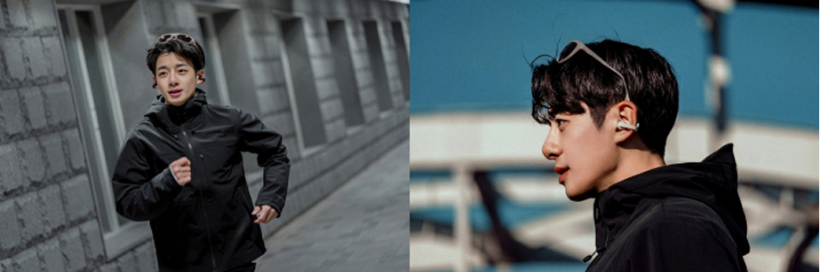
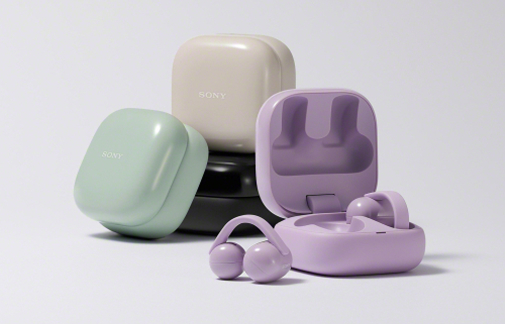

- 소니코리아가 러닝 크리에이터 ‘스톤러닝(STONE RUNNING)’과 협업해 클립 타입 오픈형 이어폰 '링크버즈 클립(LinkBuds Clip)'의 신규 광고 캠페인을 전개한다고 24일 밝혔다.
- 러닝 붐이 지속되면서 달리기 중 음악이나 콘텐츠를 함께 즐기는 이들도 늘어나고 있다. 이에 러닝에 적합한 가볍고 착용감이 안정적인 오디오 기기에 대한 수요 역시 확대되는 추세다. 소니코리아는 야외 활동이 증가하는 봄 시즌을 앞두고 광고 캠페인을 통해 러닝부터 일상까지 활용할 수 있는 아이템으로서 링크버즈 클립의 차별화된 매력을 선보였다.
- 이번 광고 캠페인은 풀코스를 2시간 26분대에 완주하는 아마추어 최강 러너이자 ‘러닝계 아이돌’로 떠오른 러닝 크리에이터 ‘스톤러닝’과 함께했다. 스톤러닝의 열정과 도전 정신에 제품의 혁신적 디자인과 기능성을 결합한 캠페인으로 러너들에게 관심과 공감을 불러 일으킬 예정이다.
- 광고 영상에서 스톤러닝은 링크버즈 클립을 착용한 채 도심을 경쾌하게 질주하며 ‘러닝 파트너’ 링크버즈 클립과의 시너지를 보여준다. 가벼운 착용감과 안정적인 고정력은 물론, 선글라스를 착용한 상태에서도 부담 없이 사용 가능한 실용성과 한 손으로 청취 모드를 간편하게 조절할 수 있는 편의성을 강조했다.

- 링크버즈 클립은 소니 최초의 클립 타입 오픈형 이어폰이다. 귓바퀴에 걸어 착용하는 디자인으로 귀를 막지 않아 교통 신호음이나 안내 방송 등 주변 소리를 들으며 안전하게 달릴 수 있다. 유닛당 6.4g의 초경량 무게와 기본 제공되는 피팅 쿠션은 장시간 러닝에도 편안하고 흔들리지 않는 착용감을 제공한다. 또한 모자나 귀걸이, 고글 등 어떤 액세서리든 함께 착용이 가능하다.
- 무엇보다 링크버즈 클립은 외부 소리가 유입되는 클립 타입 이어폰임에도 그 한계를 뛰어넘는 고품질 사운드를 자랑한다. 오디오 명가 소니의 기술력이 집약된 사운드는 언제 어디서든 주변 환경에 관계 없이 원하는 음악을 탁월한 음질로 들려준다.

[ 클립 타입 오픈형 이어폰 ‘링크버즈 클립’ ]- 사용 환경에 따라 왼쪽 유닛을 더블 탭하면 3가지 청취 모드를 선택할 수 있다. ‘표준’ 모드는 자연스러운 고품질 사운드를 구현해 출퇴근길, 산책, 가벼운 러닝 시 적합하며, ‘선명한 목소리’ 모드는 기차역이나 시끄러운 장소에서 음악이나 콘텐츠 등을 또렷하게 들을 수 있게 돕는다. 도서관, 사무실 등 조용한 실내 공간에서는 ‘누음 방지’ 모드를 통해 소리 누출을 줄여 주변에 방해가 되지 않게 콘텐츠를 즐길 수 있다.
- 배터리는 완충 시 9시간 연속 재생이 가능하며, 야외 활동에도 안심하고 사용할 수 있도록 3분 충전으로 최대 1시간 연속 재생되는 고속 충전 기능을 지원한다. IPX4 등급의 방수 성능을 갖춰 러닝 중 땀이나 비에 젖어도 걱정 없이 착용 가능하다. 링크버즈 클립은 차분하고 세련된 그레이지와 블랙, 파스텔 톤의 그린, 라벤더 등 4가지 컬러로 출시되었다.
- 소니코리아 관계자는 “야외활동이 늘어나는 봄 시즌이 다가오면서 러닝은 물론 일상에서도 몰입감과 즐거움을 더해주는 링크버즈 클립을 통해 활동적인 소비자들과의 접점을 넓히고자 이번 캠페인을 기획했다”며 “앞으로도 링크버즈 클립이 많은 이들의 러닝과 야외활동에 함께하는 필수 아이템으로 자리매김하기를 기대한다”고 전했다.
소니코리아, 조작이 간편한 블루투스 턴테이블 ‘PS-LX5BT’ 출시
2026-02-11
소니코리아,새해맞이 풀프레임 카메라 정품등록 프로모션 실시
2026-01-27
소니코리아, 조작이 간편한 블루투스 턴테이블 ‘PS-LX5BT’ 출시
2026-02-11
소니코리아, 새해맞이 풀프레임 카메라 정품등록 프로모션 실시
2026-01-27